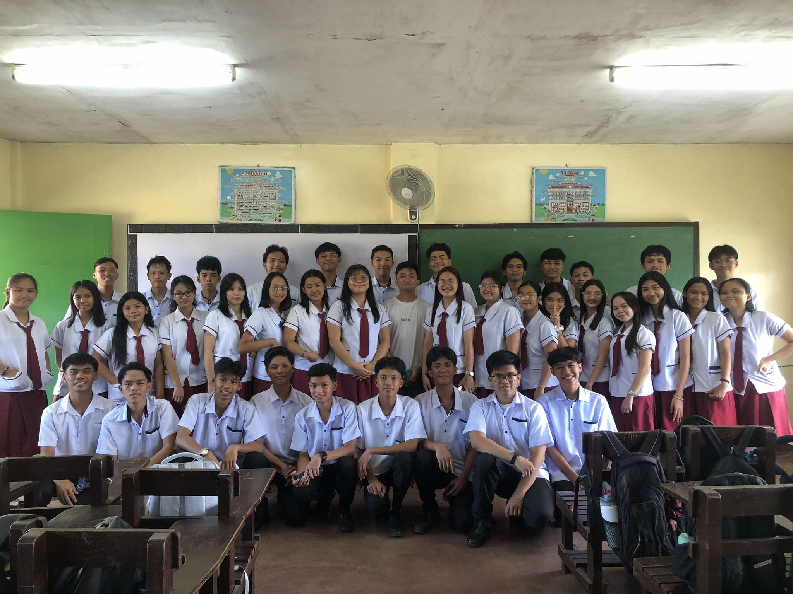

STEM 12 - 3


From First Monday To Last Friday
(ai generated): May you remember all the moments that made our days as classmates worth it. Looking back, our time together was filled with random laughter, inside jokes, and moments that made school days less stressful. From cramming group projects to sharing stories during breaks, every day had something to remember. We didn’t always have everything figured out, but we learned, adapted, and had fun along the way. These memories remind us how much we’ve grown and how those ordinary days became some of our best stories.